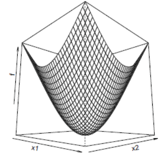
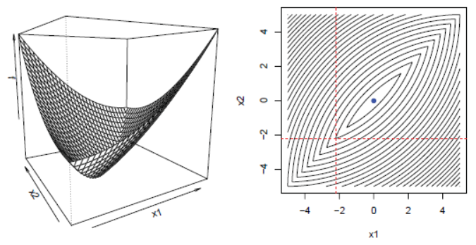
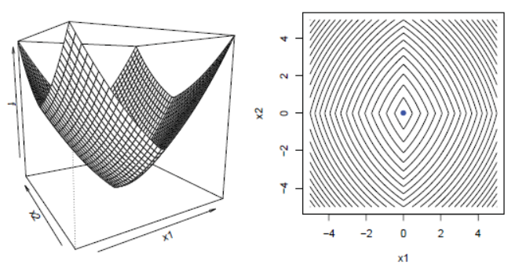

Coordinate Descent Framework
At the begining of this section, we start to discuss three different types of function.
- Given convex, differentiable function \(f: \mathbb{R}^n \to \mathbb{R}\), we know \(f(x+\delta \cdot e_i)\geq f(x)\) for all \(\delta\) because \(\nabla f(x) = (\frac{\partial f}{\partial x_1}(x),\dots,\frac{\partial f}{\partial x_n}(x)) = 0\). Here, \(e_i = (0,\dots,1,\dots,0) \in \mathbb{R}^n\), the \(i\)th standard basis vactor.

Figure1. Convex and differential function \(f\)
- Given convex but not differentiable function \(f\), we can not found a global minimizer.

Figure2. Convex but not differential function \(f\)
- Given convex \(g\) and each convex but not differentiable \(h_i\), so we get \(f(x)=g(x)+\sum_{i=1}^n h_i(x_i)\). In this function, the non-smooth part is called as separable.
For any \(y\), we get \[\begin{align} f(y) - f(x) \geq& \nabla g(x)^T (y-x) + \sum_{i=1}^n [h_i(y_i)-h_i(x_i)]\\ =& \sum\limits_{i=1}^n [\nabla_ig(x)(y_i-x_i)+h_i(y_i)-h_i(x_i)] \geq 0 \end{align}\] Thus, we can get global minimizer.

If we get a function with the formula like \(f(x) = g(x) + \sum_{i=1}^n h_i(x_i)\), where the \(g\) is convex and differentiable function, each \(h_i\) is convex functions, then we can use coordinate descent to find global minimizer. The procedure is following: start with some initial guess \(x^{(0)}\), and repeat
\[\begin{align}
x_1^{(k)} \in& \mathop{\arg\min}_{x_1} f(x_1,x_2^{(k-1)},x_3^{(k-1)},\dots,x_n^{(k-1)})\\
x_2^{(k)} \in& \mathop{\arg\min}_{x_2} f(x_1^{(k)},x_2,x_3^{(k-1)},\dots,x_n^{(k-1)})\\
x_3^{(k)} \in& \mathop{\arg\min}_{x_3} f(x_1^{(k)},x_2^{(k)},x_3,\dots,x_n^{(k-1)})\\
\cdots& \\
x_n^{(k)} \in& \mathop{\arg\min}_{x_n} f(x_1^{(k)},x_2^{(k)},x_3^{(k)},\dots,x_n)\\
\end{align}\]
Figure3. Convex, not differential but separable function \(f\)
for \(k=1,2,3,\dots,K\)
Note: after we solve for \(x_i^{(k)}\), we use its new value from then on.